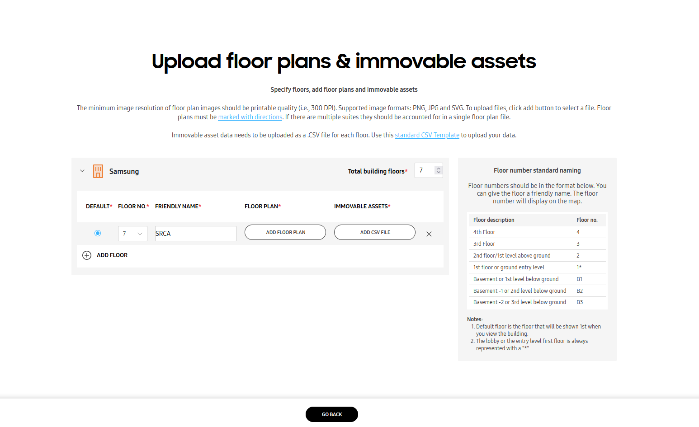
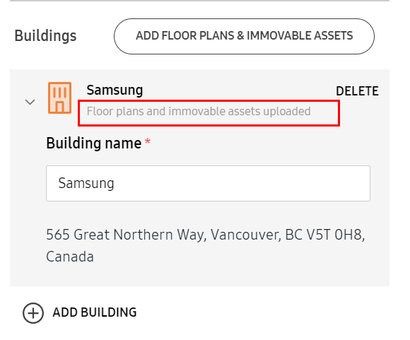
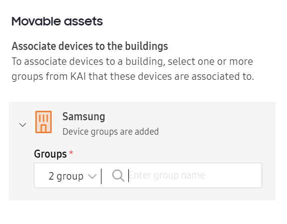

Create venues (Labs)
Last updated July 26th, 2023
In Knox Asset Intelligence, Venues are a way of identifying geographical areas for the purpose of indoor location tracking. A Venue can be a single building, or it can be a property with multiple buildings within its boundaries. In order to view indoor location tracking statuses on the Location dashboard, or view indoor location related analytics, you must first create one or more Venues. There are two options to create Venues:
- A Lite mode option — easy to create but less accurate using floor plan image.
- A Full mode option — more time-consuming to create but highly accurate.
How to create a Venue
The process for creating either venue type is similar. To create a Venue:
-
From the left navigation pane, click Venues (Labs) under the Location menu.
-
Click CREATE VENUE.
-
Select whether you want to create a Lite mode or Full mode venue, then click CHOOSE THIS METHOD.
To create a Full mode Venue, you MUST already have an IMDF file prepared.
-
On the Create venue page, enter a name and address for the venue. You’ll see the location displayed on the map.
-
Under Buildings, click ADD BUILDING, then add a name and address for the building.
This can be the same as your venue name and address if your venue only has a single building.
-
Repeat this step if you have multiple buildings.
Prepare floor plans and immovable objects
Once you’ve selected the type of venue you want to create, you’ll need to prepare your floor plans and map the locations of your immovable assets. Before you upload your floor plan:
-
Make sure your floor plan images are at least 300 DPI, and in PNG, JPG, or SVG format for Lite venue types, and IMDF for Full venue types.
-
Mark your floor plan with directional arrows as indicated in the following diagram.
-
Using the provided CSV template, enter the following information for each immovable asset you want to include in your floor plan:
-
Group name — The type of immovable asset. This release only supports Wi-Fi AP-802.11mc as the Group name.
-
Asset ID — The unique identifier for the asset (IMEI).
-
BSSID — The basic service set identifier used to identify an access point.
-
Friendly name — A custom (user-friendly) name given to the asset, which can be used to differentiate it from similar assets. For example, “Conference room 1”
-
Usage — Depending on whether the asset is intended to be used indoors or outdoors, either Indoor Only or Outdoor Only respectively. This will affect the internal accuracy calculation algorithms and how the Access Point location information is sent to the location tracking algorithm.
-
Coordinate type — Either Geo or Relative. If you use relative coordinates, the bottom-left corner is marked (0,0).
-
Height — The height of the property, in the unit of measurement designated by the Scale factor
-
Position coordinates — The location of your immovable assets.
- If the coordinate type is Geo, latitude and longitude values. For example, enter -123.456789; -98.123456.
- If the coordinate type is Relative, coordinates relative to the bottom-left corner of the floor plan and in the unit of measurement designated by Scale factor. For example, if the scale factor is meters and the immovable asset is 100 m above (0,0) and 200 m to the right of (0,0), enter 100;200 as the position coordinates.
-
Scale factor — The unit of measurement for the height and relative coordinates. For example, meters or feet.
-
Upload floor plans and immovable assets
Now that your floor plan and immovable asset CSV file is complete, you can upload the information to the server and build your venue. To do this:
-
Back on the CREATE VENUE page, next to Buildings, click ADD FLOOR PLANS & IMMOVABLE ASSETS.
-
To the left of your building name, click > to expand the floor details.

-
Next to Total building floors, enter the number of floors in your building.=
-
Click ADD FLOOR to enter details for your first floor. Select a floor number, enter a friendly name for it, and upload the following files:
- Floor plan
- CSV file with immovable asset information
- (For Lite mode only) A CSV file of the venue’s dimensions
-
Repeat for any additional building floors. If you have multiple floors, you can select one of them as the default floor.
-
For additional buildings, repeat these same steps to upload their floor plans and immovable assets.
-
At the bottom of the page, click GO BACK to return to the venue creation page.
-
If your floor plans meet the requirements — that is, at least 300 DPI and in PNG, JPG, or SVG format — and your immovable asset CSV files contain the proper fields, a message under each building name shows Floor plans and immovable assets uploaded.

Assign devices to buildings
Before you assign your devices, make sure they’re grouped in Knox Asset Intelligence first.
-
At the bottom of the CREATE VENUE page, click ADD MOVABLE ASSETS.
-
Beside a building name, click > to expand the details.
-
Under Groups, enter the name of the Knox Asset Intelligence device group you want to add. You can select one or more groups to add.

-
Repeat Steps 2 and 3 for any additional buildings in your venue.
-
Click REQUEST TO PROCESS.
Verify venue
Your venue information is then submitted to a Samsung admin for processing, and you’ll receive an email once processing is complete.
After a Samsung admin processes your venue information, you then need to verify whether the buildings, floor plans, and immovable assets are correct.
-
On the Venues page, select a venue with the Pending verification status.
-
Click ACTIONS, then Verify venue.
-
On the VERIFY VENUE page, your floor plan is shown with boundaries and immovable assets added. Check whether the immovable asset locations and floor plan placement are correct.
- If all three are correct, select Yes for all, then click VERIFY & PUBLISH.
- If not, select No for the items that aren’t correct, then click RETURN. You’re prompted to provide a description of the inaccuracy for each applicable category. Then, click RETURN AND REQUEST TO PROCESS.
If you verified the immovable asset locations and floor plan placement as correct, the venue status changes to Published and you can then start seeing indoor location data for your venue. Otherwise, your venue is sent back to the Samsung admin to be processed again.
On this page
Is this page helpful?